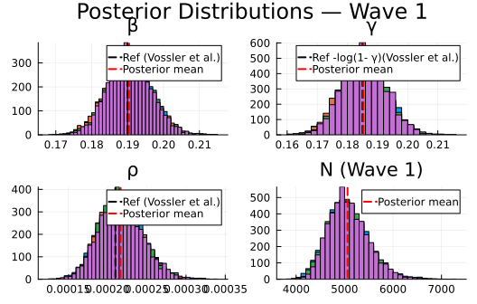
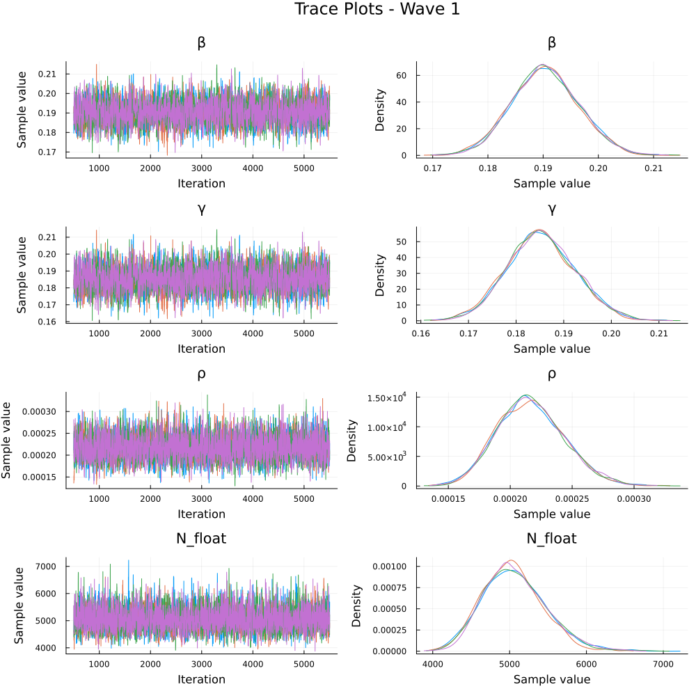
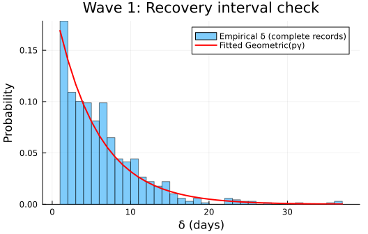
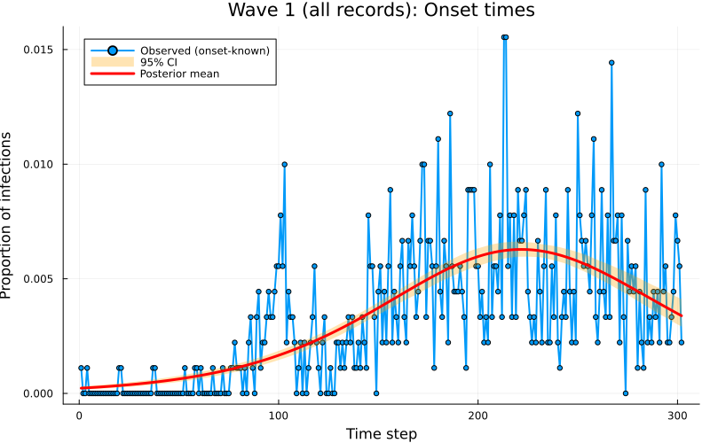

using Turing # For probabilistic programming
using Distributions # For probability distributions
using SpecialFunctions # For lgamma (log gamma function)
using Random # For random number generation
using Plots # For plotting
using StatsPlots # For advanced plotting
using MCMCChains # For handling MCMC output
using Dates # For now()
using CSV # For reading CSV files
using DataFrames # For data manipulation
using Statistics # For statistical functionsInference of an SIR difference equation model using dynamic survival analysis and Turing.jl - Wave 1 of the Ebola outbreak data
Introduction
This notebook demonstrates how to implement and infer parameters for a discrete-time SIR (Susceptible-Infected-Recovered) model using the Survival Dynamical System (SDS) approach from KhudaBukhsh et al. (2019), later referred to as Dynamic Survival Analysis (DSA). Our approach (DDSA, Discrete Dynamical Survival Analysis) is a variant of the SDS approach that discretises the continuous-time model into a discrete-time model and use Turing.jl for probabilistic programming and inference.
DDSA reinterprets a discrete-time SIR map as a survival process: the map PMF f gives the probability of infection at each time step, and infection and recovery times in the case line list are treated as event-time data. The full log-likelihood combines three components: a Multinomial term for the onset-time histogram, a 1-indexed Geometric term for recovery intervals (consistent with the per-step removal probability pγ = 1−e^{−γ}), and a Binomial final-size constraint linking the observed case count K to the at-risk population N and attack fraction τ.
To showcase this approach we apply the method to real data. The 2018–2020 Ebola virus disease (EVD) epidemic in the Democratic Republic of the Congo (DRC) unfolded in three successive waves across North Kivu, South Kivu, and Ituri. In this notebook we focus on Wave 1, from the outbreak declaration in August 2018 to 27 February 2019, and analyse 907 individual case records.
This dataset was previously analysed using the continuous version of DSA by Vossler et al. (2022). So we will take their results as a point of comparison for our DDSA. Therefore, our analysis inherits key data-interpretation and epidemiological assumptions from Vossler et al. (2022), and introduces additional discrete-time modelling assumptions specific to DDSA:
- Hospitalisation date as removal: the hospitalisation date is treated as the end of the infectious period (i.e., “removal” from transmission), so (δ=)
hosp − onsetis used as the infectious period proxy for complete records. - Homogeneous SIR map: transmission and removal parameters are constant within-wave, with a closed, well-mixed at-risk population and no explicit heterogeneity (spatial, behavioural, or intervention time-variation) beyond what the likelihood encodes.
- Discrete-time infectious period model (DDSA): infectious periods are modelled as 1-indexed
Geometric(pγ)in daily time. This is the discrete analogue of the continuous-time exponential assumption; the bridge quantity is \((p_γ = 1 - e^{-γ})\), the per-day removal probability implied by the continuous-time rate. - Daily discretisation (DDSA): event times are analysed on a calendar-day grid, with onset dates contributing to the discrete infection-time histogram used by the map-based likelihood.
Among the 907 Wave 1 records, 679 are complete (both symptom onset and hospitalisation dates known), 222 have a known onset but no recorded hospitalisation, and 6 have a hospitalisation date but no known onset. Each group contributes different likelihood terms, following the three-case structure in Vossler et al. (2022):
| Group | Count | Likelihood contribution |
|---|---|---|
Complete (e1=1, e2=1) |
679 | Multinomial (onset) + Geometric (recovery) + Binomial |
Onset-only (e1=1, e2=0) |
222 | Multinomial (onset) + Binomial only |
Hosp-only (e1=0, e2=1) |
6 | Convolution over unknown onset + Binomial |
Onset-only records inform the infection-time distribution but not the infectious-period term, because hospitalisation dates are missing. Hosp-only records are handled with a convolution that marginalises over unknown onset time:
\[ \log P\left(T_{\mathrm{rem}}=t \mid f, p_\gamma\right) = \log\left(\sum_{u=1}^{t-1} f_u (1-p_\gamma)^{t-u-1} p_\gamma\right). \]
Since we are missing the “onset” time, but know the “removal” time, the model treats the onset as a hidden variable and sums over every possible day it could have happened (restricted to \(u \leq t-1\) so that \(t-u \geq 1\) lies in the support of the 1-indexed Geometric infectious period). Finally, the full log-likelihood is used to perform Bayesian inference using NUTS in Turing.jl.
Libraries
We set a random seed for reproducibility.
Random.seed!(1234);Utility functions
This function converts a rate, r over a unit time interval to a proportion.
function rate_to_proportion(r, t=1.0)
if r < 0 || isnan(r)
return 0.0
elseif isinf(r)
return 1.0
else
result = 1 - exp(-r * t)
return isnan(result) ? 0.0 : max(min(result, 1.0), 0.0)
end
end;This function evaluates log(exp(a) + exp(b)) by rescaling around max(a,b), avoiding underflow when summing many very small probabilities expressed on the log scale.
function logaddexp(a::Real, b::Real)
m = max(a, b)
isfinite(m) ? m + log(exp(a - m) + exp(b - m)) : m
end;This function generates a vector of counts from a vector of times and the total number of timesteps in a simulation.
function time_counts(times::AbstractVector{<:Integer}, nsteps::Integer)
counts = zeros(Int, nsteps)
@inbounds for t in times
1 ≤ t ≤ nsteps && (counts[t] += 1)
end
return counts
end;Transitions
We start by defining the deterministic SIR model in discrete time using a system of difference equations. The model tracks the proportion of susceptible (S), infected (I), cumulative infections (C), and new infections per time step (Y).
function sir_map!(du, u, p, t)
(S, I, C, Y) = u
(β, γ) = p
infection = rate_to_proportion(β*I)*S # New infections
recovery = rate_to_proportion(γ)*I # New recoveries
@inbounds begin
du[1] = S - infection # Update susceptibles
du[2] = I + infection-recovery # Update infected
du[3] = C + infection # Update cumulative infections
du[4] = infection # Store new infections
end
nothing
end;This function solves a map with the above function signature.
function solve_map(f, u0, nsteps, p)
# Pre-allocate array with correct type
sol = similar(u0, length(u0), nsteps + 1)
# Initialize the first column with the initial state
sol[:, 1] = u0
# Iterate over the time steps
@inbounds for t in 2:nsteps+1
u = @view sol[:, t-1] # Get the current state
du = @view sol[:, t] # Prepare the next state
f(du, u, p, t) # Call the function to update du
end
return sol
end;Alternatively, we could use the DifferentialEquations.jl ecosystem (via defining a DiscreteSystem and solving using SimpleFunctionMap from SimpleDiffEq.jl) to simulate the model, although this incurs an overhead in computational cost, in addition to introducing another dependency.
This function simulates the SIR model and returns the solution, the final epidemic size (τ) and the probability distribution of infection times (f).
function simulate(β, γ, ρ, nsteps)
tspan = (0, nsteps)
# Preserve type by using zero/one of the promoted type
T = promote_type(typeof(β), typeof(γ), typeof(ρ))
zero_T = zero(T)
one_T = one(T)
u0 = [one_T - ρ, ρ, zero_T, zero_T] # Initial conditions: S, I, C, Y
p = [β, γ]
sol = solve_map(sir_map!, u0, nsteps, p)
τ = sol[3,end] # Final size (total infected)
f = Vector{eltype(sol)}(sol[4,2:end]) # Copy to preserve type
f = abs.(f) # Ensure non-negative values
# Handle edge cases for probability vector
if τ <= 0 || any(isnan.(f)) || any(isinf.(f))
f = fill(one(eltype(f))/nsteps, nsteps)
else
f = f/τ # Normalise frequencies to sum to 1
end
return sol, τ, f
end;Data loading
We load the Ebola outbreak data from EVD_Wave1.csv.
# Load the data
df_all = CSV.read("EVD_Wave1.csv", DataFrame);
# Split into three groups by data availability
df_complete = df_all[(df_all.event1 .== 1) .& (df_all.event2 .== 1), :]
df_onset_only = df_all[(df_all.event1 .== 1) .& (df_all.event2 .== 0), :]
df_hosp_only = df_all[(df_all.event1 .== 0) .& (df_all.event2 .== 1), :]
# Total observed infections for the Binomial final-size term
K_total = nrow(df_all)
# Use all records with a known onset time: complete + onset_only
onset_times_all = vcat(df_complete.onset, df_onset_only.onset)
nsteps = Int(ceil(maximum(onset_times_all))) + 1
ti_onset = max.(1, min.(Int.(round.(onset_times_all)) .+ 1, nsteps))
K_onset = length(ti_onset) # used in Multinomial
th_onset = time_counts(ti_onset, nsteps)
# Complete records only: hosp - onset
raw_delta_complete = df_complete.hosp .- df_complete.onset
@assert all(raw_delta_complete .>= 0) "Found complete records with hosp < onset."
same_day_complete = count(<(1), raw_delta_complete)
delta_complete = max.(1, Int.(round.(raw_delta_complete)))
# The "onset" column for e1=0 records contains the hospitalisation time.
T_hosp_only = max.(1, min.(Int.(round.(df_hosp_only.hosp)) .+ 1, nsteps))
# Minimum N: at least as many susceptibles as total observed infections
N_min = K_totalSummary of the loaded data:
Wave 1 data summary:
Total records (K_total, Binomial): 907
With known onset (K_onset, Multinomial): 901
of which complete (e1=1, e2=1): 679
of which onset-only (e1=1, e2=0): 222
Hosp-only (e1=0, e2=1, convolution): 6
nsteps: 302
Same-day/sub-day complete intervals (<1 day): 85
Recovery intervals range: 1–37 daysTuring Model
The Turing.jl probabilistic model for the model, specifies priors, simulates the difference equations, and defines the likelihood for observed data by defining the distributions of (a) the total infected (b) the distribution of infection times, (c) the distribution of recovery times and (d) the convolution over unknown onset time for recovery-only records. We place uniform priors on the parameters, as upper and lower bounds are typically easy for the user to define. Here, we take advantage of the discrete nature of the data, by fitting a histogram of the infection times using a multinomial distribution, rather than a series of categorical distributions.
@model function dsa_ebola_allrecords(nsteps::Int,
K_total::Int,
K_onset::Int,
th_onset::Vector{Int},
delta_complete::Vector{Int},
T_hosp_only::Vector{Int},
N_min::Int)
# Priors for model parameters
β ~ Uniform(0.01, 1.0) # Transmission rate
γ ~ Uniform(0.01, 1.0) # Recovery rate
ρ ~ Beta(1.0, 500.0) # Initial infected proportion
N_float ~ Uniform(Float64(N_min), Float64(N_min + 20000))
# Convert to integer for Binomial: use floor and clamp to ensure N >= N_min
# The conversion is done after sampling, so NUTS can sample continuously
N = Int(floor(max(Float64(N_min), N_float)))
# Simulate deterministic model
_, τ, f = simulate(β, γ, ρ, nsteps)
# Ensure τ is valid for binomial distribution
τ_valid = clamp(τ, 1e-6, 1.0 - 1e-6)
# Ensure f is valid for multinomial distribution
f_valid = max.(f, 1e-10) # Add small positive value to avoid zeros
f_valid = f_valid / sum(f_valid) # Normalise
log_f_valid = log.(f_valid)
# (1) Binomial final-size: all K_total infections
K_total ~ Binomial(N, τ_valid)
# (2) Multinomial onset histogram: records with known onset (K_onset)
th_onset ~ Multinomial(K_onset, f_valid)
# (3) Geometric recovery intervals: complete records only.
# Build a 1-indexed geometric by shifting Julia's 0-indexed Geometric(p)
# so the support matches recovery intervals in days (δ = 1,2,...).
ϵ = 1e-8
pγ = clamp(rate_to_proportion(γ), ϵ, 1 - ϵ)
G1 = LocationScale(1, 1, Geometric(pγ))
for i in eachindex(delta_complete)
delta_complete[i] ~ G1
end
# (4) Convolution for hosp-only records: marginalise over unknown onset u.
# L_i = Σ_{u=1}^{T_rem-1} f[u] · P(W = T_rem - u), using the same
# 1-indexed geometric distribution G1 as above.
for T_rem in T_hosp_only
u_max = min(T_rem - 1, nsteps)
log_terms = (log_f_valid[u] + logpdf(G1, T_rem - u) for u in 1:u_max)
Turing.@addlogprob! foldl(logaddexp, log_terms; init = -Inf)
end
return (β=β, γ=γ, ρ=ρ, N=N_float)
end;Inference
We now perform inference using the Turing model. We start by setting the number of samples to be used in the sampler and instantiating the model.
n_samples = 5000
model = dsa_ebola_allrecords(nsteps, K_total, K_onset,
th_onset, delta_complete, T_hosp_only, N_min);Next, we run inference using the No U-Turn Sampler (NUTS).
# Warmup
_ = sample(model, NUTS(), 1)
# Run sampler on 4 chains
@time chain = sample(model,
NUTS(500, 0.65; max_depth=12, Δ_max=1000.0, init_ϵ=0.2),
MCMCThreads(),
n_samples,
4);Results Analysis
Once we have run the sampler, we can get a summary of the parameter estimates, along with the expected number of samples.
describe(chain)Chains MCMC chain (5000×18×4 Array{Float64, 3}):
Iterations = 501:1:5500
Number of chains = 4
Samples per chain = 5000
Wall duration = 1881.72 seconds
Compute duration = 5105.48 seconds
parameters = β, γ, ρ, N_float
internals = n_steps, is_accept, acceptance_rate, log_density, hamiltonian_energy, hamiltonian_energy_error, max_hamiltonian_energy_error, tree_depth, numerical_error, step_size, nom_step_size, lp, logprior, loglikelihood
Summary Statistics
parameters mean std mcse ess_bulk ess_tail rha ⋯
Symbol Float64 Float64 Float64 Float64 Float64 Float6 ⋯
β 0.1904 0.0061 0.0001 2558.2052 4190.5806 1.001 ⋯
γ 0.1853 0.0072 0.0001 2517.2558 4006.7698 1.002 ⋯
ρ 0.0002 0.0000 0.0000 3573.1076 5317.0408 1.000 ⋯
N_float 5060.9729 409.8004 6.6895 3764.1532 5462.2079 1.002 ⋯
2 columns omitted
Quantiles
parameters 2.5% 25.0% 50.0% 75.0% 97.5%
Symbol Float64 Float64 Float64 Float64 Float64
β 0.1786 0.1863 0.1903 0.1944 0.2025
γ 0.1715 0.1804 0.1851 0.1901 0.1998
ρ 0.0002 0.0002 0.0002 0.0002 0.0003
N_float 4341.7315 4773.1330 5030.5370 5317.3480 5930.9361
NUTS diagnostics:
NUTS internals available: [:n_steps, :is_accept, :acceptance_rate, :log_density, :hamiltonian_energy, :hamiltonian_energy_error, :max_hamiltonian_energy_error, :tree_depth, :numerical_error, :step_size, :nom_step_size, :lp, :logprior, :loglikelihood]
Divergent transitions: 0 / 20000
Max tree depth reached: 12.0
Step size ε (median [min, max]): 0.00379 [0.000605, 0.00674]We can also plot posterior distributions for each parameter.
β_mean = mean(chain[:β])
γ_mean = mean(chain[:γ])
ρ_mean = mean(chain[:ρ])
N_mean = mean(chain[:N_float])
# Vossler et al. (2022) Wave 1 reference values
p1 = histogram(chain[:β], label="", title="β", density=true)
vline!(p1, [0.190], label="Ref (Vossler et al.)", color=:black, linestyle=:dash, linewidth=2)
vline!(p1, [β_mean], label="Posterior mean", color=:red, linestyle=:dash, linewidth=2)
p2 = histogram(chain[:γ], label="", title="γ", density=true)
vline!(p2, [0.185], label="Ref -log(1- γ)(Vossler et al.)", color=:black, linestyle=:dash, linewidth=2)
vline!(p2, [γ_mean], label="Posterior mean", color=:red, linestyle=:dash, linewidth=2)
p3 = histogram(chain[:ρ], label="", title="ρ", density=true)
vline!(p3, [0.00021], label="Ref (Vossler et al.)", color=:black, linestyle=:dash, linewidth=2)
vline!(p3, [ρ_mean], label="Posterior mean", color=:red, linestyle=:dash, linewidth=2)
# N is wave-specific
p4 = histogram(chain[:N_float], label="", title="N (Wave 1)", density=true, bins=50)
vline!(p4, [N_mean], label="Posterior mean", color=:red, linestyle=:dash, linewidth=2)
plot(p1, p2, p3, p4, layout=(2,2), plot_title="Posterior Distributions — Wave 1")
Plot trace plots for MCMC diagnostics.
plot(chain, plot_title="Trace Plots - Wave 1")
Parameter Estimates
We summarise the posterior estimates for the model parameters.
Parameter Estimates — Wave 1 (all records, posterior means with 95% CI):
β: 0.19 [0.179, 0.202] (Vossler et al.: 0.190)
γ: 0.185 [0.171, 0.2] (Vossler et al.: 0.169)
pγ=1-e⁻ᵞ: 0.169
ρ: 0.00022 [0.00017, 0.00027] (Vossler et al.: 0.00021)
N: 5061.0 [4342.0, 5931.0]
I₀=ρ·N: 1.1 [0.8, 1.5] (implied initial infected)
R₀=β/pγ: 1.126 (Vossler et al. β/γ: 1.124)
mean IP=1/pγ: 5.91 days (Vossler et al. 1/γ: 5.9 d)Recovery interval fit check
# Empirical δ histogram vs fitted Geometric(pγ_post) PMF (1-indexed)
δ = delta_complete
kmax = maximum(δ)
ks = 1:kmax
pmf = pdf.(LocationScale(1, 1, Geometric(pγ_post)), ks)
pδ = histogram(δ;
normalize=true,
bins=1:kmax,
alpha=0.5,
label="Empirical δ (complete records)",
xlabel="δ (days)",
ylabel="Probability",
title="Wave 1: Recovery interval check"
)
plot!(pδ, ks, pmf; linewidth=2, color=:red, label="Fitted Geometric(pγ)")
pδ
Epidemic curve
sol, τ, f = simulate(β_post, γ_post, ρ_post, nsteps)
n_samples_ci = min(500, length(chain[:β]))
sample_idx = rand(1:length(chain[:β]), n_samples_ci)
f_samples = Matrix{Float64}(undef, nsteps, n_samples_ci)
for (idx, i) in enumerate(sample_idx)
_, _, f_i = simulate(chain[:β][i], chain[:γ][i], chain[:ρ][i], nsteps)
f_samples[:, idx] = f_i
end
f_lower = [quantile(f_samples[t, :], 0.025) for t in 1:nsteps]
f_upper = [quantile(f_samples[t, :], 0.975) for t in 1:nsteps]
# Normalised onset histogram
p1 = plot(1:nsteps, th_onset ./ K_onset,
label="Observed (onset-known)",
title="Wave 1 (all records): Onset times",
xlabel="Time step", ylabel="Proportion of infections",
linewidth=2, marker=:circle, markersize=3)
plot!(p1, 1:nsteps, f_lower,
fillrange=f_upper, fillalpha=0.3, fillcolor=:orange,
linecolor=:orange, label="95% CI", linewidth=0)
plot!(p1, 1:nsteps, f,
label="Posterior mean", linewidth=3, color=:red)
plot(p1, size=(800, 500))
Discussion
This example demonstrates a probabilistic programming approach to inference of individual infection and recovery times using a discrete version of dynamic survival analysis (DDSA) applied to Wave 1 of the Ebola outbreak data from the Democratic Republic of the Congo. The model provides posterior estimates for the transmission rate (β), recovery rate (γ), initial proportion of infected individuals (ρ), the implied initial infected count \(I_0 = \rho N\), and the wave-specific effective at-risk scale (N) that enters the Binomial final-size observation model.
Compared to the original implementation of DSA from Vossler et al. (2022), which used a stochastic SIR model solved via continuous-time ordinary differential equations (ODEs), we use a deterministic SIR map (discrete-time transition function) that updates the system state at discrete time steps using difference equations. Despite this difference in modelling approach, our posterior mean estimates for β, ρ fall within the 95% credible intervals of the original implementation: β = 0.19 [0.179, 0.202] (Vossler point estimate 0.190, CI [0.178, 0.204]); γ = 0.185 [0.171, 0.2] (Vossler 0.169 [0.157, 0.183]); \(p_\gamma = 1 - e^{-\gamma}\) = 0.169 at the quoted γ, comparable to interpreting Vossler’s continuous removal rate on a daily scale; ρ = 0.00022 [0.00017, 0.00027] (Vossler 0.00021 [0.00016, 0.00027]); \(I_0 = \rho N\) = 1.1 [0.8, 1.5]; \(R_0 = \beta / p_\gamma\) = 1.126 (Vossler β/γ = 1.124); mean infectious period \(1 / p_\gamma\) = 5.91 days (Vossler 1/γ = 5.9 days).
Vossler et al. (2022) reported inference with a joint likelihood across waves and a single effective population size \(N\) shared by all waves (together with wave-specific transmission and removal parameters). Here we fit Wave 1 only, in its own time window with re-initialised compartmental conditions, so our \(N\) is a wave-specific effective susceptible scale in \(K \sim \mathrm{Binomial}(N,\tau)\) for that window. Thus, it is not the same globally pooled \(N\) estimand, though both play the same role of linking observed case counts to the model-implied attack fraction \(\tau\).